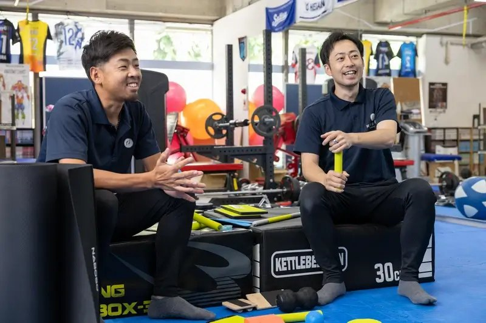
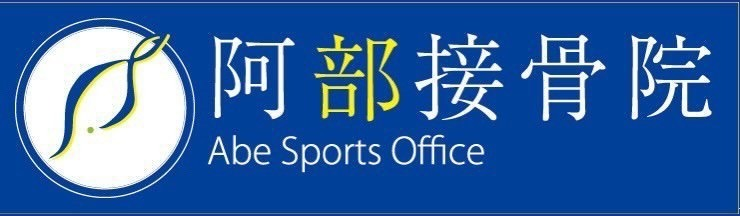
大阪府茨木市 LINE予約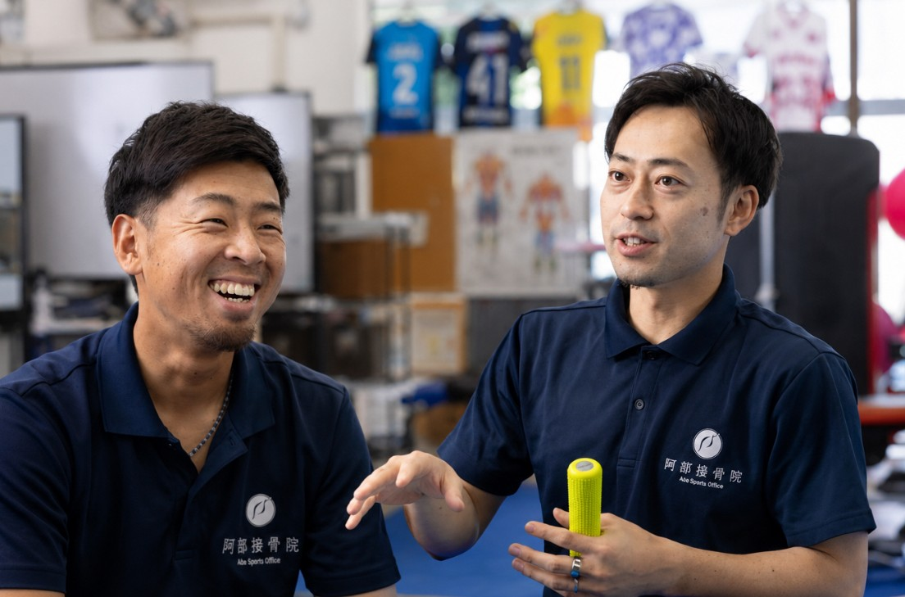
状態を確認し、原因を見極め、納得いただきながら復帰までサポートします。
状態を確認する
必要に応じてエコー観察を行い、組織（筋肉・靭帯・骨・軟骨など）の状態を確認します。
原因を探す
痛い場所だけでなく、なぜそこに負担がかかっているのかを評価します。
納得できる説明
現在の状態と、これからの施術方針をわかりやすくお伝えします。
変化を実感する
施術前後で、動きや痛みの変化を確認しながら進めます。
復帰までサポート
競技復帰や日常生活への復帰まで、必要なサポートを行います。
何が原因か
わからない
試合まで
時間がない
病院では
様子を見てと
言われた
同じ痛みを
繰り返している
術後の
リハビリが
不安
痛みには、理由がある。
なぜ、痛いのか。
なぜ、繰り返すのか。
なぜ、思うように
動けないのか。
原因を見極めるために、丁寧に評価します。
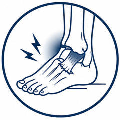
筋損傷・靭帯損傷・骨折 など
必要に応じて、エコー観察も行います。
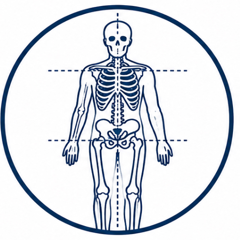
解剖学的肢位・重心線・骨盤や肩の左右差
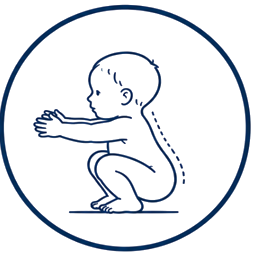
姿勢・動作・呼吸・感覚入力
見極めた原因に対して、組み合わせる。
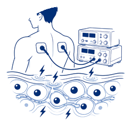
生体電流を整え、身体が本来もつ“治る力”を引き出します。
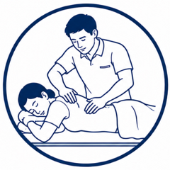
骨格や関節を、本来の位置へ整えます。
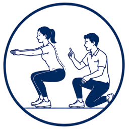
正しい身体の使い方を再学習するエクササイズ。
これらを、その人の状態に合わせて組み合わせます。
実感する。
さっきより、動く。
痛みが、違う。
身体が、軽い。
納得する。
なぜ、痛かったのか。
なぜ、変化したのか。
これから、
何をすればいいのか。
説明を受けて、理解できる。
実際の症例をもとに、どのような評価・アプローチを行ったのかをご紹介します。
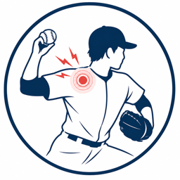
大学野球
半年間リハビリを続けても改善せず、18m程度しか投球できない状態。
詳しく見る 閉じる肩の痛みにより、半年間リハビリを継続していたものの改善が乏しく、約18m程度しか投球できない状態でした。
がみられ、投球動作時の負担が肩へ集中している状態でした。
肩だけに注目するのではなく、
を中心にアプローチしました。
2回目の来院時には遠投約70mまで投球可能となり、
「久しぶりに投げることができたので7割程度で投げました。まだ投げられそうでした。」
との感想をいただきました。
※ 施術による変化には個人差があります。
※ 本症例は一例であり、同様の結果を保証するものではありません。
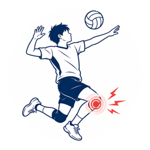
中学3年生 男子バレー
複数の治療院を転々とした後に来院。膝だけでなく、身体全体の回復力に着目した症例。
詳しく見る 閉じる膝の痛みに悩み、複数の治療院を転々とした後、指導者の紹介で来院。来院時は、
という状態でした。
膝の痛みは確かに強くありました。しかし詳しく話を聞くと、
などの症状がみられました。オスグッド病だけの問題ではなく、身体が十分に回復できない状態に陥っていたと考えられました。
膝への施術だけでなく、
を中心に施術を行いました。
施術後は毎回のように強い眠気が現れ、本人も
「帰宅したらすぐ寝てしまう」
という状態が続きました。身体が休息を必要としている状態だったと考えられます。施術を重ねるにつれて、その強い眠気は徐々に減少。そしてちょうどその頃から、
などの変化がみられました。
痛みがある場所だけに原因があるとは限りません。この症例では、膝の痛み以上に「回復できなくなっていた身体の状態」が大きな課題でした。睡眠や疲労、自律神経系の状態まで含めて評価し、身体全体が本来の回復力を発揮できる環境を整えることを重視しました。
※ 施術による変化には個人差があります。
※ 本症例は一例であり、同様の結果を保証するものではありません。
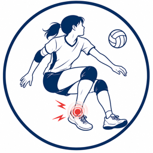
高校女子バレー
（前距腓靭帯・踵腓靭帯損傷）
試合4日前の捻挫。歩行も困難な状態から試合出場を目指した症例。
詳しく見る 閉じる試合4日前の練習中に足首を捻挫。翌日に来院された際は、
がみられました。
エコー評価および身体所見から、
が疑われる状態でした。試合が目前に迫っていたため、まずは患部の修復環境を整え、腫れや炎症反応の軽減を優先しました。
を段階的に実施しました。
木曜・金曜・土曜と施術を継続し、土曜日にはジャンプ動作が可能なレベルまで改善。日曜日の試合へ出場することができました。その後は再発予防と足関節機能の回復を目的に、数日間は練習量を調整しながら施術を継続しました。
大切なのは「試合に出ること」だけではなく、その後も安心して競技を続けられる状態をつくること。痛みや腫れだけでなく、足首本来の機能回復までサポートしています。
※ 施術による変化には個人差があります。
※ 本症例は一例であり、同様の結果を保証するものではありません。
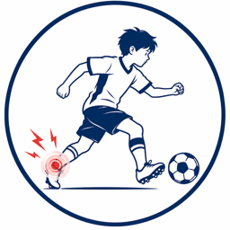
小学4年生 サッカー
（踵骨骨端症）
走る・ジャンプするたびに踵が痛い。足だけでなく、身体全体の使い方に着目した症例。
詳しく見る 閉じるサッカーをしている小学4年生。
という症状で来院されました。サッカーは続けたいものの、運動量が増えると症状が強くなる状態でした。
評価を行うと、
がみられました。最近の子どもたちは姿勢の崩れや運動不足の影響から、身体全体の緊張が強くなっているケースも少なくありません。この症例でも、踵だけでなく身体全体のバランスに課題がみられました。
踵だけに施術を行うのではなく、
を中心にアプローチしました。
初回の施術では、脊柱機能を調整しただけでもジャンプ時の痛みが大きく軽減しました。その後も、
を継続しながらサッカーを継続。運動量が増えた際に症状が出ることもありましたが、調整を続けることで痛みはほとんど気にならない状態となりました。
痛みがなくなれば終わりではありません。シーバー病は成長期に多い症状ですが、身体の使い方や機能面に問題が残っていることもあります。阿部接骨院では、痛みの改善だけでなく、「もっと動ける身体づくり」までサポートしています。
※ 施術による変化には個人差があります。
※ 本症例は一例であり、同様の結果を保証するものではありません。
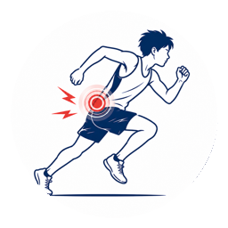
中学3年生 陸上部
病院で2ヶ月の安静を指示されるも、3週間後の最後の大会出場を目指した症例。
詳しく見る 閉じる中学3年生の陸上選手。病院で腰椎分離症と診断され、「2ヶ月間の安静が必要」と説明を受けていました。しかし、3週間後には最後の大会を控えており、どうしても出場したいという思いで来院されました。来院時は、
しており、身体全体の動きが硬くなっていました。
患部の修復はもちろん必要でしたが、それ以上に気になったのは身体の使い方でした。評価を行うと、
がみられました。さらに日頃のトレーニング内容によって、腰へ負担が集中しやすい動作パターンが身についている状態でした。
患部の回復を促しながら、
を並行して行いました。また、自宅で行う腹圧エクササイズを指導し、継続して取り組んでもらいました。
初回施術から3日後の来院時、本人から
「前屈も後屈も全然痛みが違います！」
「股関節も動くし、なんだか姿勢も良くなった気がします！」
との言葉がありました。実際に身体の動きも大きく改善しており、前屈・後屈・股関節の可動域にも変化がみられました。その後も、
を継続し、最後の大会へ出場することができました。現在も競技を継続しており、病院での経過観察でも問題ないことを確認しています。
痛みが出ている場所だけをみても、本当の原因は見えてこないことがあります。この症例では、腰だけでなく、腹圧機能や身体の使い方に着目することで競技復帰につながりました。阿部接骨院では、痛みの改善だけでなく、「なぜそこに負担が集中したのか」を大切にしています。
※ 施術による変化には個人差があります。
※ 本症例は一例であり、同様の結果を保証するものではありません。
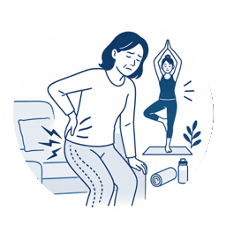
50代 女性
腰痛・足のしびれ
ソファから動けない状態から、ヨガやピラティスを楽しめるようになった症例。
詳しく見る 閉じる腰痛と足のしびれが強く、日常生活にも大きな支障が出ていました。痛みのため思うように動くことができず、毎日ソファで過ごす時間がほとんどの状態でした。本人も、
「このまま歩けなくなるのではないか」
という強い不安を抱えていました。
症状は腰や足に現れていましたが、評価を行うと身体全体のバランスが大きく崩れていました。特に、
がみられ、神経への負担が強くなっている状態でした。
腰だけに施術を行うのではなく、
を目的に手技による施術を行いました。
施術を重ねるにつれて、
がみられました。その後は徐々に活動量も増え、現在ではヨガやピラティスに通えるほどになっています。来院当初、
「人生終わったと思ってた」
「このまま歩けなくなるんかなと思ってた」
と話されていましたが、後に
「人生変わりました！」
という言葉をいただきました。
痛みを取ることだけがゴールではありません。大切なのは、「その人がやりたいことを再びできるようになること」です。阿部接骨院では、症状だけでなく、その先の生活や人生にも目を向けながらサポートしています。
※ 施術による変化には個人差があります。
※ 本症例は一例であり、同様の結果を保証するものではありません。
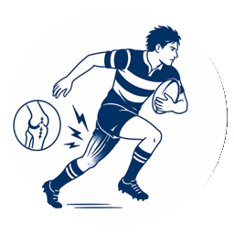
大学生 ラグビー
病院では全治2ヶ月。最後の大会まで1ヶ月半の中で競技復帰を目指した症例。
詳しく見る 閉じる大学ラグビー部に所属する選手。ハムストリング上部を負傷し、病院では「全治2ヶ月程度」と説明を受けていました。しかし、学生最後の大会まで残り1ヶ月半。どうしても最後の大会に出場したいという思いで来院されました。エコー評価でも筋線維の損傷が確認できる状態でした。
肉離れそのものの修復はもちろん必要でした。しかし、「なぜハムストリングに負担が集中したのか」を評価すると、過去に受けた反対側膝の手術が大きく関係していることが分かりました。本人に自覚はありませんでしたが、検査を行うと手術した側を無意識にかばう動作パターンが残っていました。その結果、反対側のハムストリングへ負担が集中し続けていたと考えられました。
まずは、
を行いました。さらに、
の連動性に着目し、身体全体のバランスを整えるアプローチを実施しました。一見関係ないように思える過去の怪我も、現在の動きや負担に影響していることがあります。
施術を継続する中で、
していきました。週2回程度の通院を継続しながら競技復帰を目指し、学生最後の大会へ出場することができました。大会後には、
「最後の大会、なんとか出ることができました！」
と嬉しい報告をいただきました。
過去の怪我は、身体や脳に記憶されていることがあります。肉離れは筋肉だけの問題ではなく、身体全体の使い方や過去の怪我の影響が関係していることも少なくありません。阿部接骨院では、「今の痛み」だけでなく、過去の怪我や身体のつながりまで評価することを大切にしています。
※ 施術による変化には個人差があります。
※ 本症例は一例であり、同様の結果を保証するものではありません。
ケガの治療だけでなく、術後ケアや再発予防、パフォーマンス向上まで。
当院の取り組みをご紹介します。
安静だけでは元には戻りません。早く正しく歩く・微弱電流・感覚の再教育まで、競技復帰を見据えたケアをご紹介します。
続きを読む →手術後の腫れ・傷あとが気になる方へ。MLBでも活用される技術で、傷が治る過程からサポートします。
続きを読む →何度も同じ場所を痛めてしまう方へ。再発の背景にある“身体の使い方”の問題に迫ります。
続きを読む →速く走れないのは才能のせい？ 動作と身体機能の視点から、改善のヒントを探ります。
続きを読む →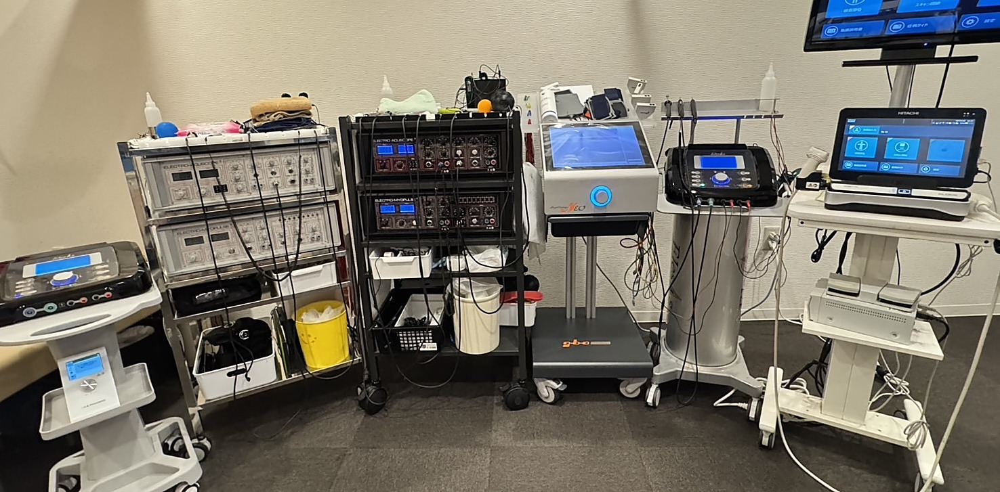
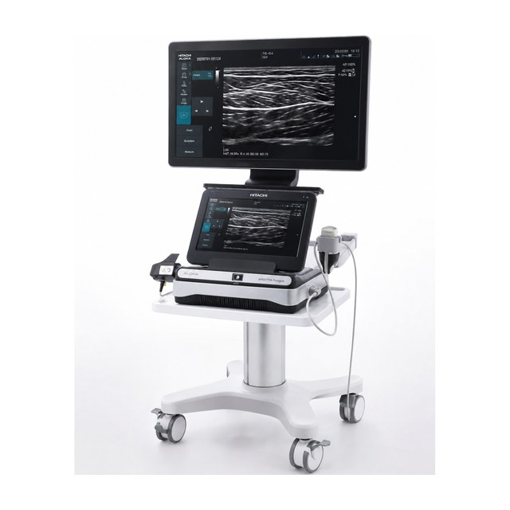
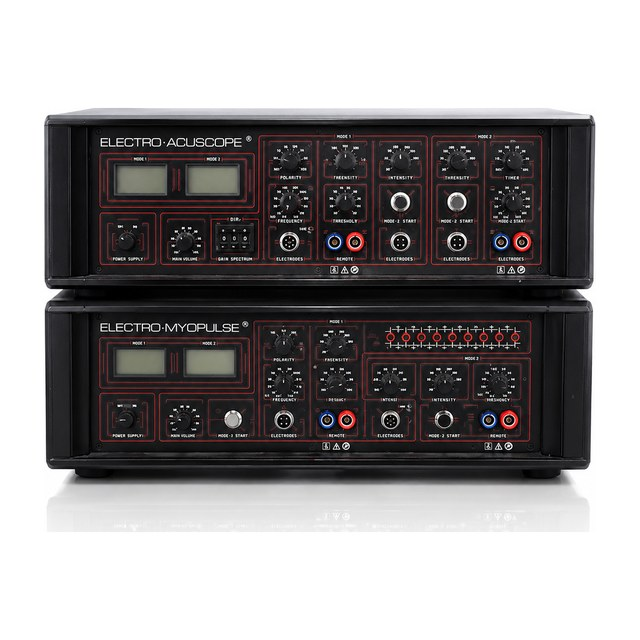
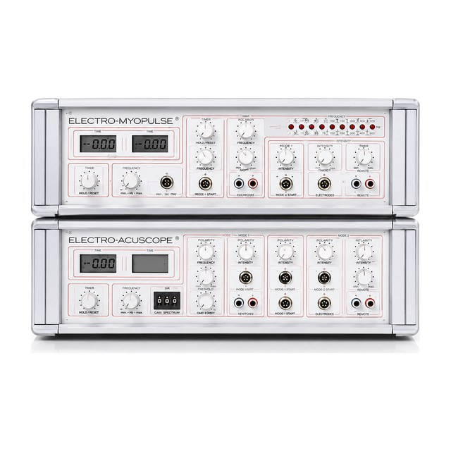
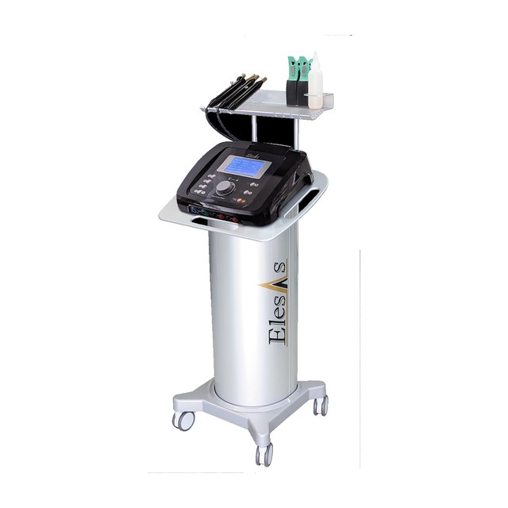
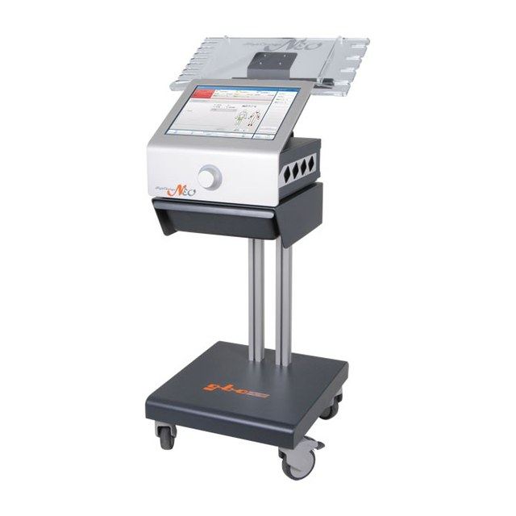
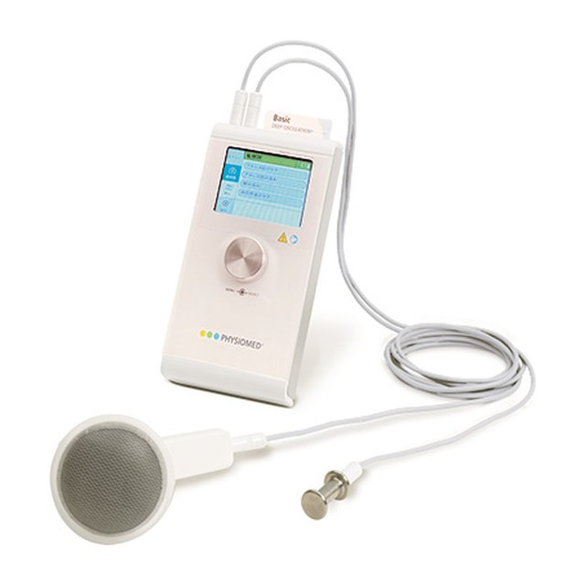
各メディア・書籍にて、当院の取り組みを
ご紹介いただいています。

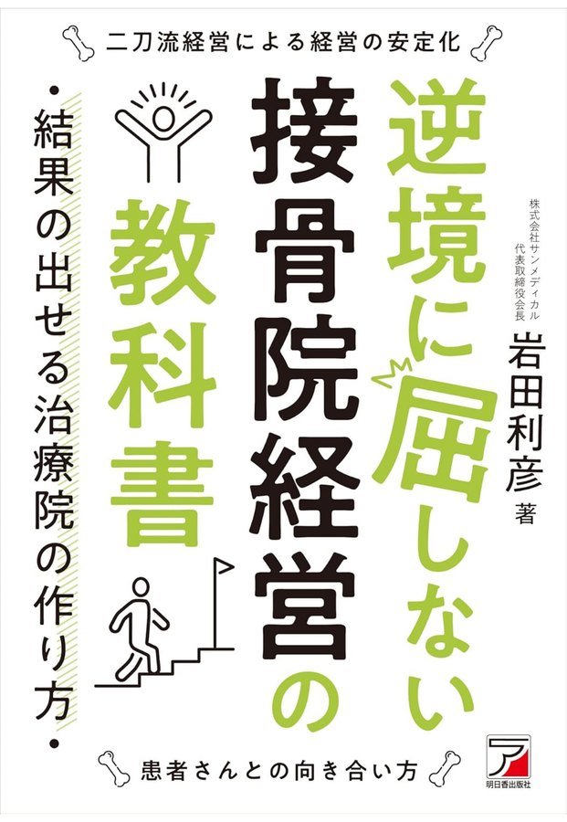
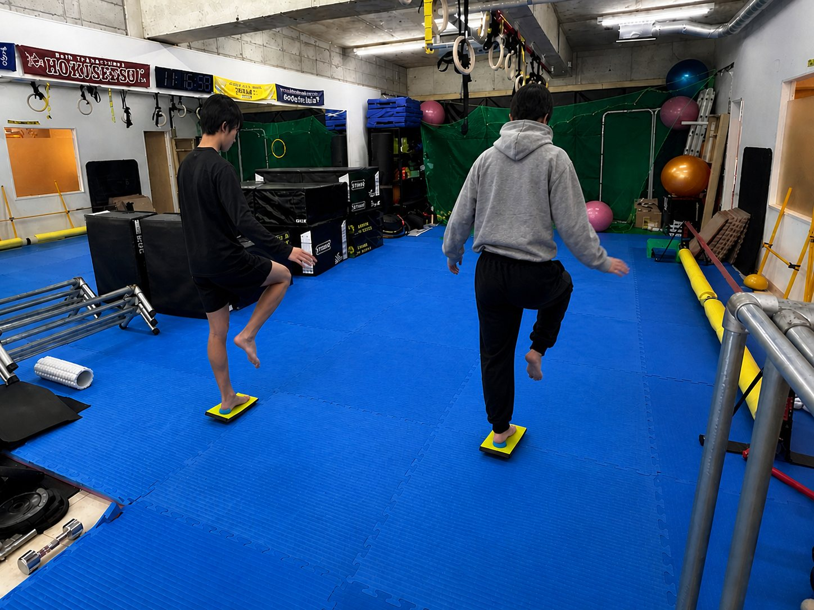
小中学生向け 体幹教室
今しかできない。今だからできることを。
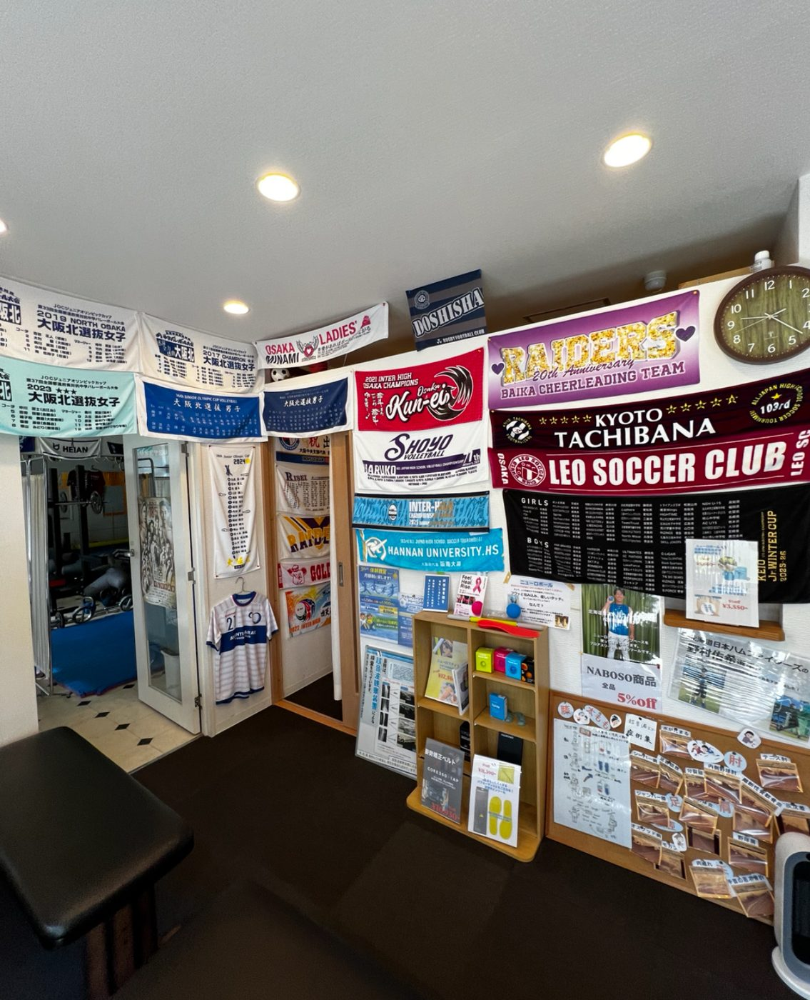
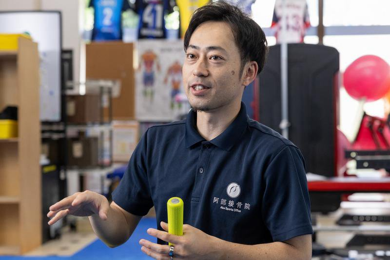
院長 ／ 柔道整復師
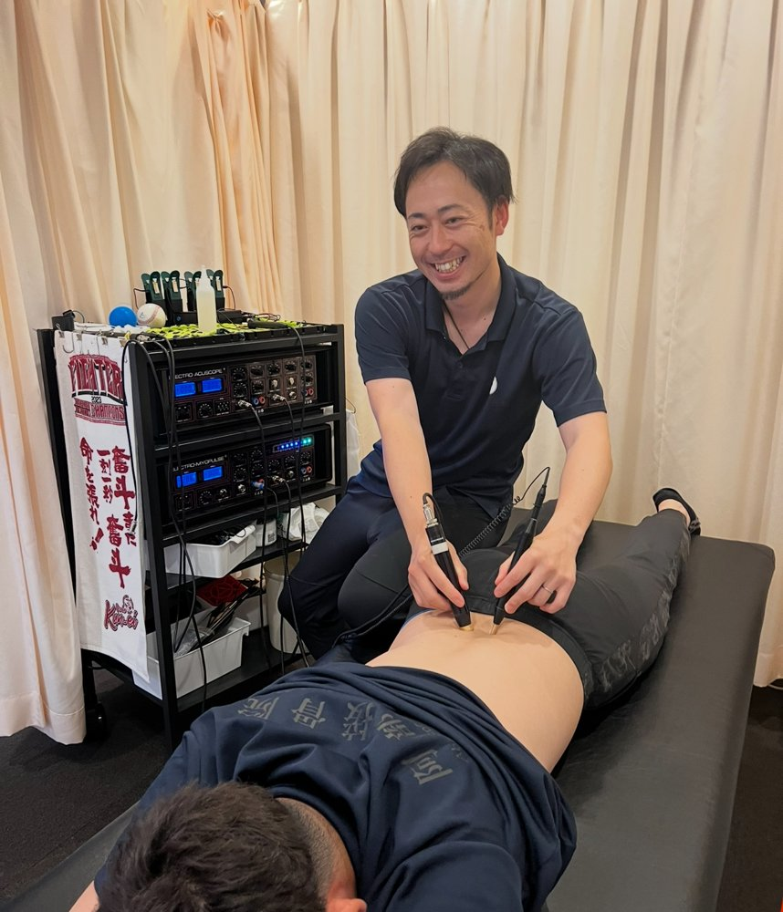
副院長 ／ 鍼灸師
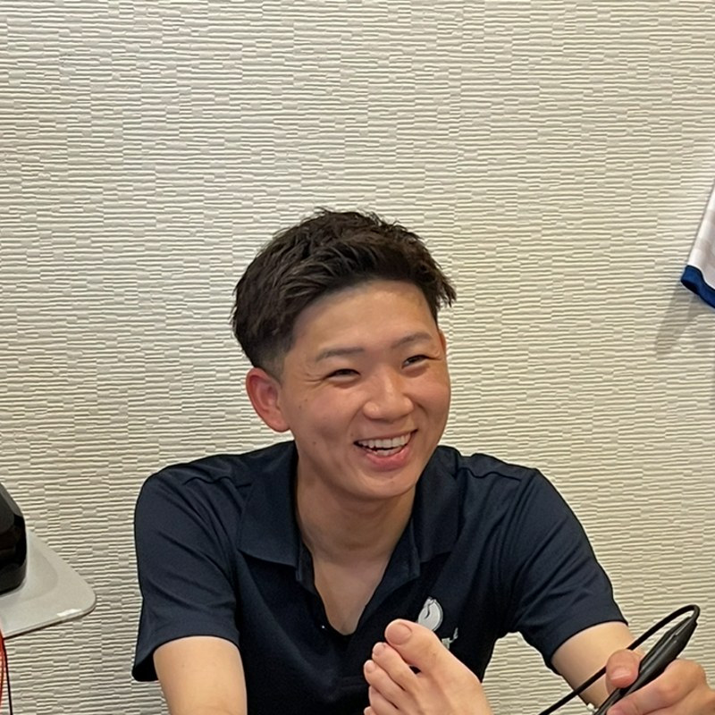
スタッフ ／ 柔道整復師
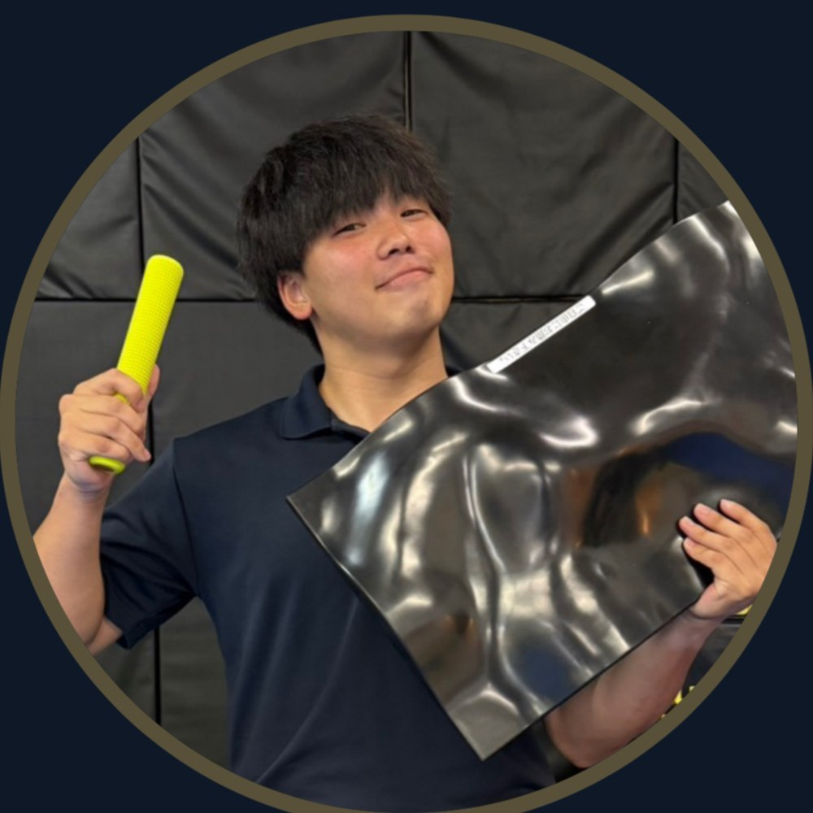
スタッフ ／ 柔道整復師
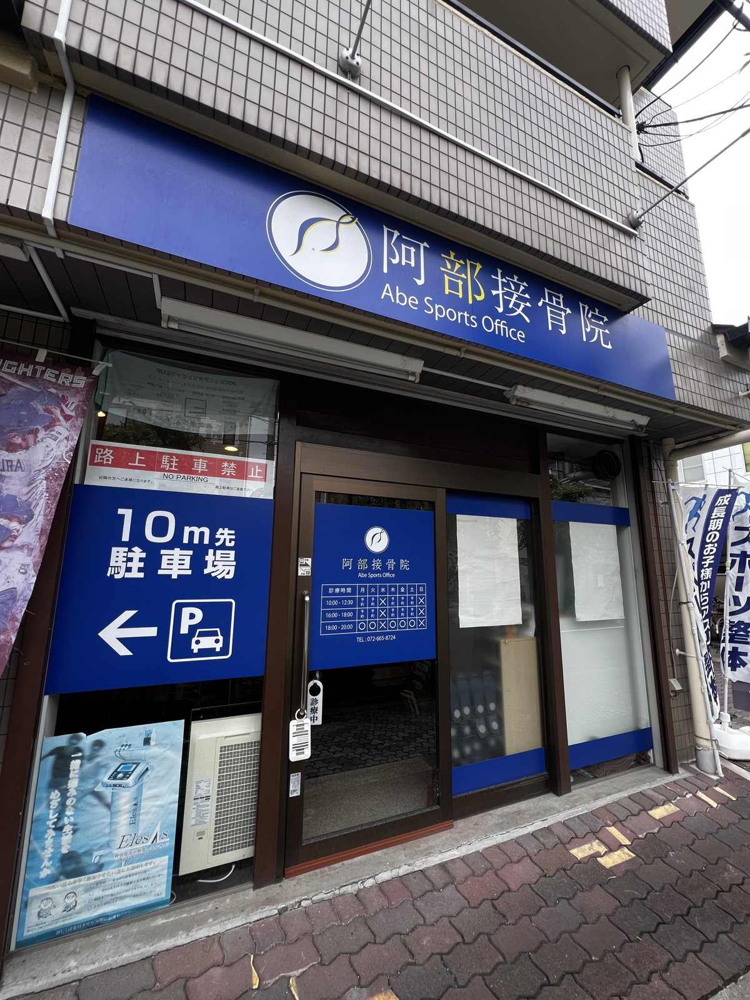
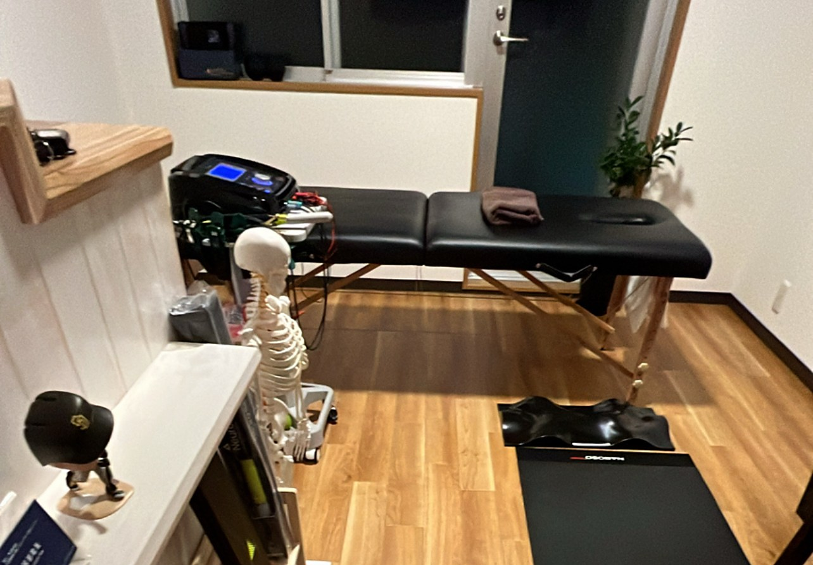
朝日新聞出版
阿部接骨院（大阪府茨木市）
2010年に千里三浦整骨院で勤務され、平成医療学園柔道整復師科を2013年に卒業（柔道整復師免許取得）。その後2016年に「阿部接骨院」を開業され、2020年に現在の地に移転。「即効性にこだわり、少ない来院で早期改善へ導く」がモットーでいらっしゃいます。
幼少期より野球を行っておりましたが、中学生の時に野球肘になり接骨院に通っていました。高校生の時にも膝を痛め、当時接骨院の先生に「後十字靭帯を損傷している可能性があるから、病院でMRI検査をしてきてください」と言われ、その診断結果が一致していたことに感銘を受け、施術家の道へ進もうと思いました。
エレサス、アキュスコープ、マイオパルスは噂で何となく知ってはいたのですが、ある日、営業の方が来られ、ふと機器の事を思い出しデモをお願いしました。当初は、四肢クリップを使用した疲労回復や組織の修復にさらに使えればいいやという甘い考えだったのですが、説明を受けても一度では理解できず再度勉強会に参加しました。理解に時間を要しましたが、身体の仕組みや微弱電流の奥深さを思い知らされ、自分の知識のなさ、視野の狭さを痛感しました。デモで使用した際、通電時にほとんど何も感じないのに痛みや動きがみるみる変化し、ぜひ導入しようということでエレサスを購入しました。当時はスタッフと2人体制で分院展開を考えていたことと1台のエレサスを2人で奪い合うように使用していたため、半年後に新たに2台目のエレサスを追加で導入しました。
エレサスを使用していく中で、ではアキュスコープとマイオパルスはエレサスとどう違うのか、どこまですごいのかと思うようになり、結局アキュスコープ80L、マイオパルス75Lまで追加導入することになった次第です。
現在は、急性外傷の痛みや組織の修復に通電するのはもちろん、慢性痛には頭部通電などを行っています。以前は結果に対してアプローチをしていましたが、通電方法などを伺うと、症状の部位への通電（患部通電）の説明は少なく、原因に対してのアプローチを何度も受けることで考え方も変わっていきました。今では原因をしっかり見極め、どこからどのように痛みがアウトプットされているのか、アウトプットを変化させるとインプットがどう変わるのかを考えながら施術をするようになりました。
エレサスを導入し、数年後にアキュスコープ、マイオパルスを導入。この中で僕にとって一番大きかったのは、機器の使い方ではなく、微弱電流治療器を用いることで「人と身体のシステム」を観るようになったことです。治すのは患者さんご自身で、僕らは機器を通して患者さんにきっかけや気づきを与えることで、痛みの変化から治癒への道しるべを示してあげるサポートを行っているということです。特に、今後はどこに行ったらよいのか、どうしたら良いのかなどの治療院迷子になっている患者さんの力になれれば幸いです。
※『逆境に屈しない接骨院経営の教科書』（朝日新聞出版）掲載
営業担当者のコメント
阿部先生、貴重なお時間頂き、誠にありがとうございます。先生は良いものを積極的に取り入れ、常に前向きにどうしたら患者さんの痛みや治癒に役立てるかを考えておられ、より高みを目指した施術に余念がありません。（佐藤）